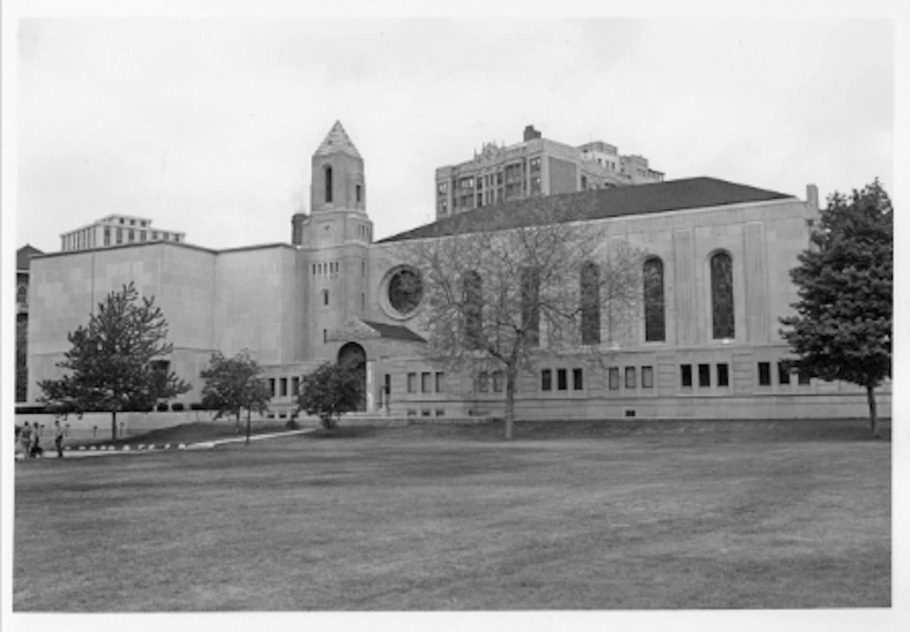

Currently, I am a Stacks Management Student Worker in Cudahy Library at Loyola. I assist the Access Services Staff with a variety of daily tasks such as reshelving materials, organizing, shifting books, and transporting materials between university campuses. I love the library, and it has improved my attention to detail and my ability to work independently. Additionally, I have developed strong organizational skills, which I bring to every project I undertake.

I graduated in 2022 from Central High School in Philadelphia. I am currently a student at Loyola University Chicago, where I am pursuing a BAS in Computer Science. I am set to graduate in the Spring of 2026. Some of my relevant coursework I have taken includes: multiple Data Structures courses, Object Oriented Design, Design and Analysis of Algorithms, Ethical Issues in Computing, and Discrete Structures. I am currently taking Progamming Languages and Software Development of Wireless and Mobile Devices.